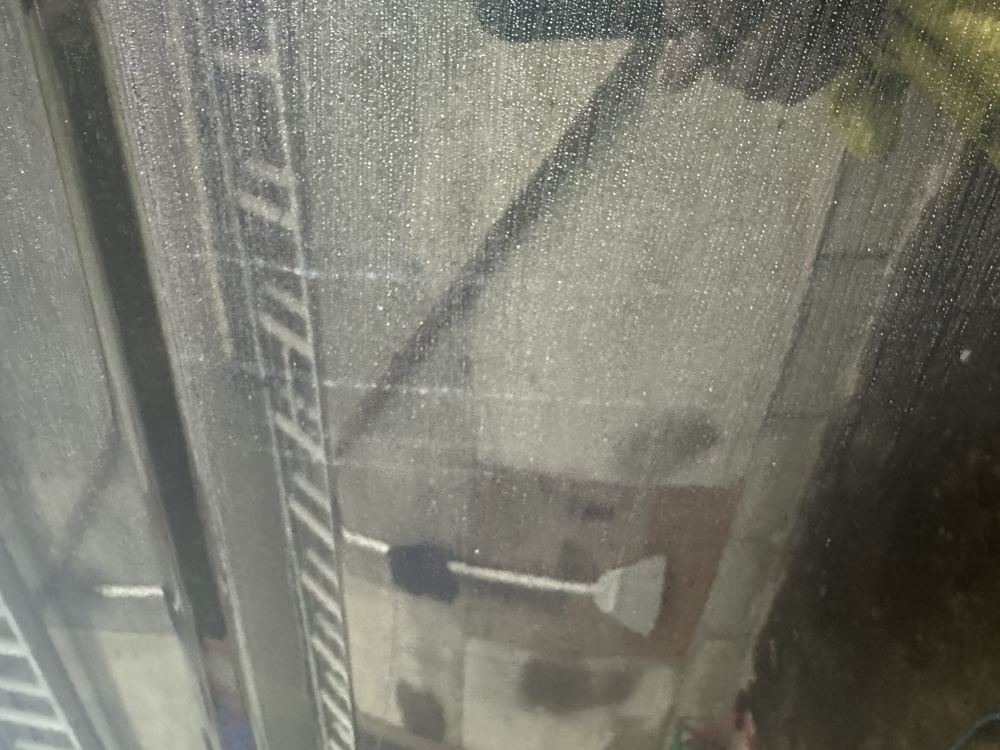
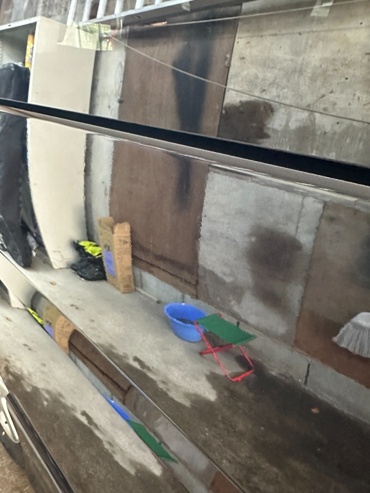
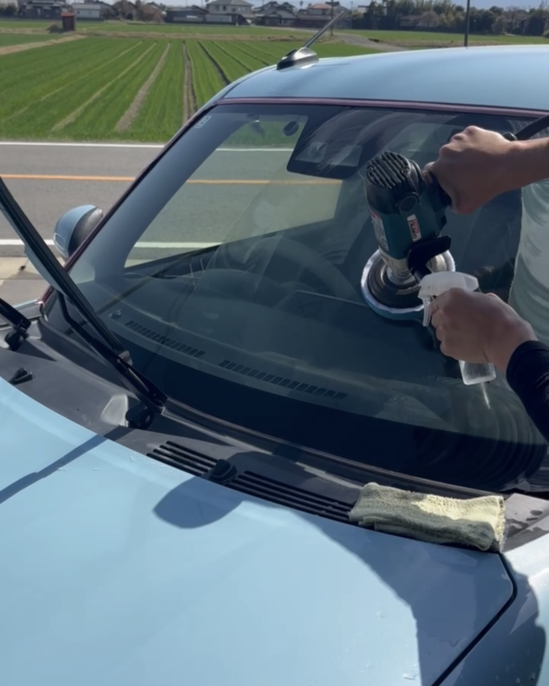
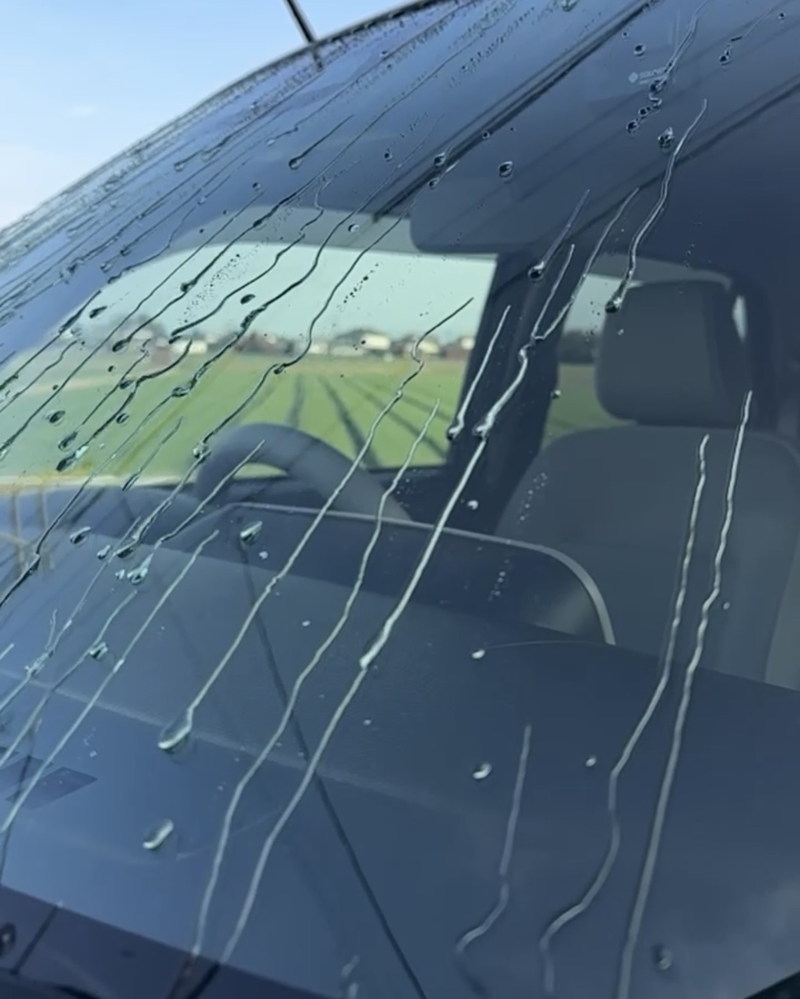

ご自宅で、あなたのお車を外も中も、ピカピカにきれいにします
出張対応 ─ あなたの駐車場がプロの施工場に
🕐 24時間 365日受付｜必ずお返事します
📞 今すぐお電話でご確認ください！
「気に入った車が見つかったけど、外装も車内も汚れている…」
販売店にクリーニングとコーティングを依頼すると、数十万円も価格がアップしてしまうこともよくありますよね。
当店なら、そのお悩みを約3分の1の価格で解決し、お車をピカピカに仕上げることができます！
軽自動車 1台 セット価格
55,000円
（税込）
さらに今なら… 2大特典付き！
施工6ヶ月後にプロが状態チェック＆メンテナンス。コーティングの輝きをキープします。
雨の日の視界を劇的に改善。雨粒が飛んでいく撥水効果で安全ドライブ。
※普通車・大型車はサイズに応じてお見積もり。お気軽にお問い合わせください。




ガラスコーティングと車内クリーニングをまとめた特別プラン
車種別の料金はお電話・LINEですぐにお答えします！
他社とはここが違います
ご自宅・職場の駐車場でOK。お車を持ち込む手間ゼロ。電源不要で場所を選びません。
プロ仕様のガラスコーティング剤で深い艶と強力な撥水を実現。1〜3年間の品質保証付き(定期メンテナンスをご利用の場合)。
シート内部まで浸透洗浄するリンサーと100℃スチームで臭いの根本を除去します。
コーティングとクリーニングを別々に頼むより断然お得。2大特典でさらにお値打ち。
LINE・お電話・InstagramDMで24時間受付中。深夜でも早朝でも必ずお返事します。
福岡市を中心に主要都市部をカバー。地元だからこそ素早い対応が可能です。
🕐 24時間 365日受付｜必ずお返事します
📞 お電話なら即回答！
お問い合わせから施工完了まで
LINE・お電話・InstagramDMから24時間受付。車種・ご希望をお伝えください。
お車の状態を確認し、明確なお見積もりを提示。ご都合の良い日時をお選びいただけます。
ご指定の場所へお伺い。ガラスコーティング施工＋車内全シートリンサー洗浄＋消臭作業を実施。
仕上がりをご確認いただき、ご納得の上でお支払い。現金・各種決済に対応。
【特典】施工6ヶ月後にプロがメンテナンス。コーティングの輝きをキープします。
実際にご利用いただいたお客様から
新車のような艶が戻りました。出張で家の駐車場に来てくれるので、忙しい自分にぴったりでした。
コーティングと車内クリーニングを別々に頼もうとしていたら倍近くかかるところでした。セットで本当にお得です。
リンサー洗浄でシート内部まで洗ってもらい、あきらめていた臭いが嘘みたいに消えました。
フロントガラスの撥水コーティングが無料でついて驚きました。雨粒が飛んでいく感覚が最高です。
お客様からよくいただく質問をまとめました
🕐 24時間 365日受付｜必ずお返事します
📞 お電話なら料金もすぐにお答えします！
コーティング無しの「車内クリーニングのみ（嘔吐・シミ汚れ除去など）」をご希望の方はこちら
▶ 福岡 車内クリーニング専門店 ページへ